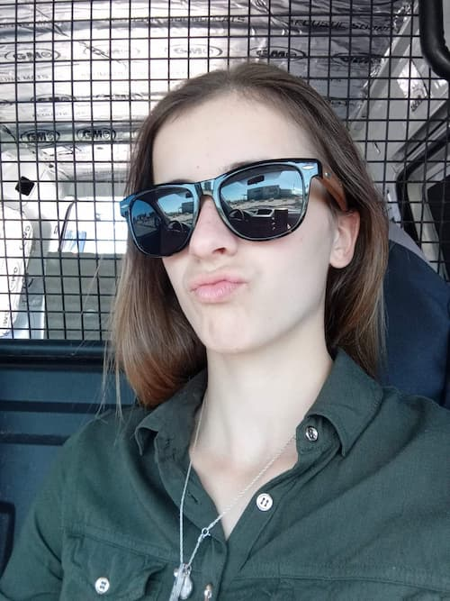

Seryn Paige Armstrong | WDD 130
Hi there. I'm Seryn.
I love ice cream, jelly beans and drawing, listening to music, coding, writing,
eating, and cooking. I live in South Africa, Cape Town but come from Krugersdorp in
Gauteng, and moved to a town called Hopefield in the Western Cape before moving to
Cape Town finally.
I went to a great Afrikaans school for my last 6 years of school. I took Engineering
Graphics and Design, Eng HL, Afr FAL, Mathematics, Business Studies, Computer
Applications Technology and Life Orientation. I did well and achieved high grades
that got me Full Colors and even a Bursary from a popular honey retailer in
town called Simplee Bee who paid my final year of school fees.
I work in a company called Lanline Technologies, which is situated in Cape Town
and I currently work as Quality Control for the Development Team I am in. I test
their websites and apps they have and make sure everything is according to standard and
expectations. I love the company though I have only been there for over 4 months now.
They are a great company, close-knitted like family with wonderful connections.
They are heading to become top ISP in their local area.